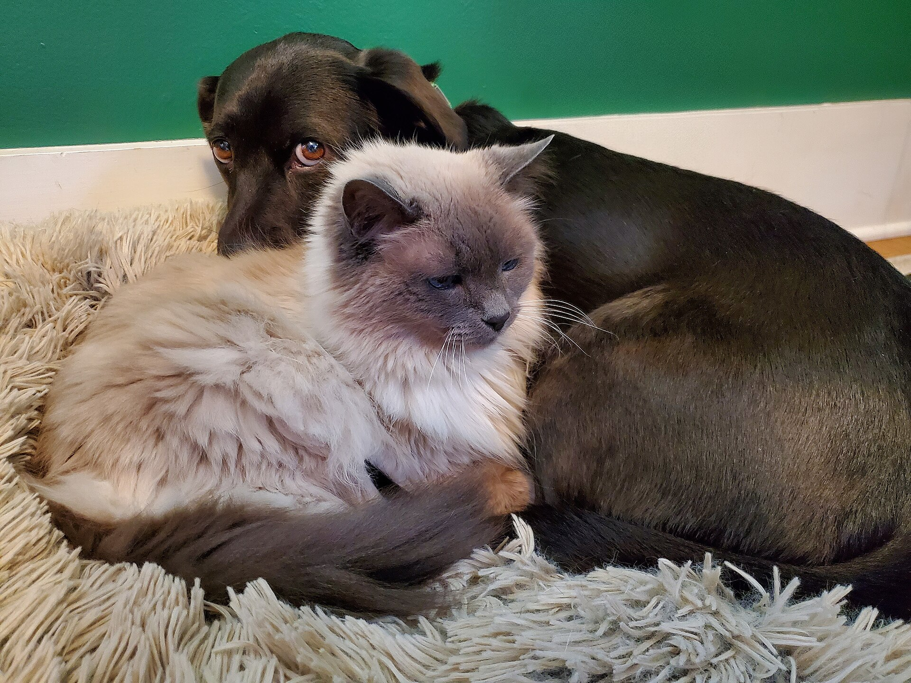

PawChrona-MMQA
Pet behavior, expression and health.
Bilingual research QA across behavior, veterinary knowledge, consultation and imaging.
Explore the five tasksResearch candidate on Hugging Face. Repository permissions apply.

Behavior and expression.
Five research tasks.
49,247 parent questions grouped by content: behavior and expression, veterinary knowledge, health consultation, image findings and imaging quality.
| Research category | Questions | Representative QA |
|---|---|---|
| Image observation & interpretation | 10,323 | “What findings are depicted in this image?” “Neutrophils; macrophages.” |
| Disease & veterinary knowledge | 15,046 | “Which skin-disease category is assigned by the source?” “Fungal infection.” |
| Pet health consultation | 852 | “My puppy lost a tooth… should I go to the vet?” “Check whether the permanent teeth are damaged.” |
| Behavior & expression | 20,013 | “Which expression category does the source assign?” “Happy (source expression category).” |
| Imaging basics & quality | 3,013 | “Which description matches the source quality annotation?” “Source quality status: underexposure.” |
| Total | 49,247 | Unique parent questions. English/Chinese views are not counted twice. |
Representative excerpts supplied for this homepage. Source expression labels and unreviewed answers are not clinical or emotional-state ground truth.
Inside the dev set.
2,500 questions, 500 per topic. A development subset of the 49,247 candidates, not a final test set.
Image interpretationOriginal contact sheet · 500 questions
Open full view
Preview unavailable. Try the original image link above or visit Hugging Face.
Each tile represents one question. Audio, video and text markers preserve the original modalities; they are not missing pictures. Some topics contain medical imagery.
Explore on Hugging FaceTechnical details.
Media types are a technical view, separate from the five content categories. Expand to browse configurations and native fields.
Media configurations and field contract
Image-linked QA
Questions linked to images, including findings, imaging quality and source-reported labels.
39,360parent questions
Overall candidate: 13,775 cat, 34,425 dog, 30 mixed and 1,017 unknown-species questions.
- qa_id
- Stable parent-question identifier
- question_en / question_zh
- Paired English and Chinese questions
- image
- Image bytes embedded in Parquet
- source / review fields
- Provenance and review state
Schema preview, not an exported QA example. References and answer fields stay out of model inputs.
Keep the evidence attached.
Every candidate retains its source linkage. Original media, authored questions, translated views and derived annotations remain distinct.
Read the dataset overviewA record travels with
- SourceOriginal reference and media binding
- LanguageEnglish/Chinese fields on one parent
- ContextSpecies and source-supported breed
- ReviewExplicit quality, privacy and clinical state
Traceability is a research property. It is not clinical approval.
Before you use it.
Is the dataset public on Hugging Face?
The repository page is public at PawChrona/PawChrona-MMQA. Dataset access requires a request and manual approval. Repository visibility does not replace research or clinical review.
Is this a clinically validated benchmark?
No. All items remain unreviewed debug_only candidates. Veterinary review, independent language/privacy review and formal multimodal-model evaluation are pending. No leaderboard or performance claim is published.
Who owns the source material?
Source materials keep their original rights. Authored organization and annotations are documented separately. The legal rights holder and original-component licences are not finalized; this page asserts no exclusive ownership of the reused corpus or completed IP registration.
Can I use it for diagnosis or treatment?
The current candidate is a research preparation artifact. It is not an approved clinical, training or test release and must not guide an individual animal's diagnosis, treatment or medication.
Follow the research.
Read the dataset card and access the candidate through its Hugging Face repository. Research review and public-release approval remain separate.